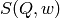

MuscatData dialog.
Table of Contents
| Name | Direction | Type | Default | Description |
|---|---|---|---|---|
| Instrument | Input | string | iris | Instrument. Allowed values: [‘irs’, ‘iris’, ‘osi’, ‘osiris’] |
| Analyser | Input | string | graphite002 | Allowed values: [‘graphite002’, ‘graphite004’] |
| Geom | Input | string | Flat | Sample geometry. Allowed values: [‘Flat’, ‘Cyl’] |
| SamNumber | Input | string | Mandatory | Sample data run number |
| SqwInput | Input | string | Mandatory | Sqw file run number |
| NR1 | Input | number | 1000 | MonteCarlo neutrons NR1. Default=1000 |
| NR2 | Input | number | 1000 | MonteCarlo neutrons NR2. Default=1000 |
| Nms | Input | number | 1 | Number of scatterings. Default=1 |
| DetAngle | Input | number | 90 | Detector angle. Default=90.0 |
| Thick | Input | string | Mandatory | Sample thickness |
| Width | Input | string | Mandatory | Sample width |
| Height | Input | number | 3 | Sample height. Default=3.0 |
| Density | Input | number | 0.1 | Sample number density. Default=0.1 |
| SigScat | Input | number | 5 | Scattering cross-section. Default=5.0 |
| SigAbs | Input | number | 0.1 | Absorption cross-section. Default=0.1 |
| Temperature | Input | number | 300 | Sample temperature (K). Default=300.0 |
| Plot | Input | string | None | Allowed values: [‘None’, ‘Totals’, ‘Scat1’, ‘All’] |
| Verbose | Input | boolean | True | Switch Verbose Off/On |
| Save | Input | boolean | False | Switch Save result to nxs file Off/On |
Calculates Multiple Scattering based on the Monte Carlo program MINUS. It takes a sample  from an input sqw workspace and supports both Flat and Cylindrical geometries. More information on the multiple scattering can be procedure can be found in the modes manual.
Example - a basic example using MuscatData.
def createSampleWorkspace(name, random=False):
""" Creates a sample workspace with a single lorentzian that looks like IRIS data"""
import os
function = "name=Lorentzian,Amplitude=8,PeakCentre=5,FWHM=0.7"
ws = CreateSampleWorkspace("Histogram", Function="User Defined", UserDefinedFunction=function, XUnit="DeltaE", Random=True, XMin=0, XMax=10, BinWidth=0.01)
ws = CropWorkspace(ws, StartWorkspaceIndex=0, EndWorkspaceIndex=9)
ws = ScaleX(ws, -5, "Add")
ws = ScaleX(ws, 0.1, "Multiply")
#load instrument and instrument parameters
LoadInstrument(ws, InstrumentName='IRIS')
path = os.path.join(config['instrumentDefinition.directory'], 'IRIS_graphite_002_Parameters.xml')
LoadParameterFile(ws, Filename=path)
ws = RenameWorkspace(ws, OutputWorkspace=name)
return ws
ws = createSampleWorkspace("irs26173_graphite002_red", random=True)
sqw = SofQW(ws, QAxisBinning='2,1,10', Emode='Indirect', OutputWorkspace="irs26173_graphite002_sqw")
SaveNexus(ws, "irs26173_graphite002_red.nxs")
SaveNexus(sqw, "irs26173_graphite002_sqw.nxs")
MuscatData(SamNumber='26173', SqwInput='26173', Thick='0.5', Width='0.5', Instrument='irs')
Categories: Algorithms | Workflow\MIDAS
Python: MuscatData.py